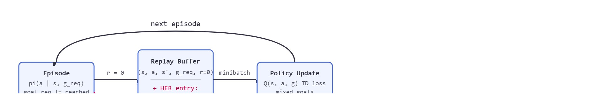

"Every failure is a success at a goal no one intended to set; hindsight makes that official."
A Goal-Conditioned Optimist
This section assumes familiarity with experience replay and the replay buffer abstraction introduced in section 16.2, and with the sparse-versus-dense reward tradeoff covered in section 18.2. The goal-conditioned framing developed here is extended to language goals and grounding in section 31.1, where natural-language instructions replace geometric goal vectors as the conditioning signal.
A warehouse robot trained only to place objects in bin A is useless the moment the job changes to bin B. Real deployments demand a single policy that can chase any goal on command, yet robots that learn from sparse rewards fail thousands of times before succeeding once. Goal-conditioned policies solve the first problem by conditioning every decision on a goal vector; hindsight experience replay solves the second by recycling every failed attempt as perfect supervision for the goal the robot accidentally achieved. Together they are why modern manipulation systems can generalize across hundreds of tasks without retraining. You will implement both, see exactly when relabeling helps, and understand the one evaluation trap that makes results look far better than they are.
Consider OpenAI's Dactyl-style in-hand manipulation, where a Shadow Hand (a five-fingered robotic hand designed to match the degrees of freedom of a human hand) must rotate a block to an arbitrary commanded orientation. With sparse reward, a randomly initialized policy almost never reaches the requested pose. Nearly every rollout returns zero, so the gradient signal vanishes. Goal-conditioned policies plus hindsight relabeling turn that wall of failures into a usable training signal. Figure 18.3A previews the core idea: a trajectory that missed the requested goal is relabeled with the goal it actually reached, turning a failure into valid supervision.
This section develops the contract for policies of the form $\pi(a \mid s,g)$, where $g$ is a desired goal such as a target object pose, waypoint, door angle, drawer position, or language-grounded task state. The reward is also goal-indexed: $r_g(s,a,s')$ asks whether the transition moved the world toward that particular goal.
For an embodied agent, goal conditioning is not optional convenience. A physical robot that hard-wires a single target into its weights requires retraining, reflashing, and re-validation every time the task changes. No real deployment can absorb that cost when goals shift daily. The goal vector also acts as a run-time safety lever: operators can command the same low-level controller to stop at a safe waypoint instead of the full target when a human enters the workspace, without touching the policy weights.
Mechanically, the policy receives the goal $g$ concatenated to or fused with the state $s$ at every decision step. The critic then learns $Q(s, a, g)$, so value estimates and gradients are always goal-specific. Changing $g$ at inference time steers the same network toward a different attractor (the behavior pattern the policy converges to for a given goal, here the trajectory that maximizes goal-conditioned value) without retraining.
The key question is practical: how can a robot learn from an attempt that missed the requested goal but still reached a different, useful state? Figure 18.3B traces the answer end to end, showing how one failed episode produces both an original replay entry and a relabeled copy that feed the same policy update loop.

A robot that discards every failed attempt discards its own curriculum; hindsight experience replay is the refusal to waste what the robot already paid for in time and energy.
Hindsight Experience Replay (HER) does not pretend a failed attempt solved the original task. It says the same transition can be valid supervision for a different goal, the one the agent actually achieved.
A common misconception is that HER "rewrites history" by telling the agent it succeeded at the original requested goal, essentially pretending the failure never happened. This is wrong. HER never changes the original goal, the original reward, or the physical outcome of any transition. What it does is store additional copies of the same transition in the replay buffer, each copy tagged with a different goal: one the agent happened to reach during that episode. In an embodied robot setting this distinction is critical because the physical state trajectory is fixed by the robot's hardware and environment; only the label in the replay buffer changes. The correct mental model is a librarian who files the same event under multiple subject headings, not an editor who revises what occurred.
That librarian's filing system has a precise mathematical form, and writing it out shows exactly which fields HER touches and which it leaves fixed. A goal-conditioned replay buffer stores transitions as $(s_t, a_t, s_{t+1}, g, r_g)$. In sparse-goal tasks, the original reward may be zero for most failed trials. HER adds extra replay entries by replacing the desired goal $g$ with a goal $\tilde g$ that was achieved later in the same episode, then recomputing the reward $r_{\tilde g}$. The practical effect is striking: on robotic manipulation tasks with sparse reward, a policy trained without relabeling typically needs around 50,000 rollout episodes to reach 50% success on the requested goal; the same policy with HER often reaches the same success rate in roughly 300 episodes on benchmark pushing and reaching tasks, a reduction of roughly two orders of magnitude in some reported settings (the exact ratio varies with task difficulty, goal space, and relabeling strategy, so treat 150-fold as an illustrative order of magnitude rather than a guaranteed multiplier) from changing nothing about the robot, the physics, or the reward function, only the labels on transitions already collected.
The mechanism works because the physical transition did happen. The same push, step, or grasp attempt can teach the value of moving from $s_t$ to $s_{t+1}$ under a different goal label. The evaluation, however, must remain on the original goal distribution, otherwise relabeling becomes a way to lower the task rather than learn it.
Hindsight Experience Replay (Andrychowicz et al., NeurIPS 2017): relabeling failed trajectories with the goals they actually achieved enables learning from binary sparse reward on robotic manipulation. It is the technique that lets a robot extract useful supervision from every attempt, even the many that miss the requested goal.
HER converts sparse failure into dense training data by changing labels, not physics. It is most natural when the environment can report both desired_goal and achieved_goal and when reward can be recomputed from those fields.
Suppose a block was supposed to end at position 10, but the robot pushed it to position 7. The original transition failed. HER can relabel part of the replay entry with goal 7, because that is what the trajectory actually achieved. Code Fragment 1 shows the relabeling step.
# Relabel failed transitions with goals the episode actually achieved.
# The original task remains unchanged for final evaluation.
episode = [
{"state": 0, "action": "push", "achieved_goal": 3},
{"state": 3, "action": "push", "achieved_goal": 7},
]
requested_goal = 10
for transition in episode:
original_reward = int(transition["achieved_goal"] == requested_goal)
relabeled_goal = transition["achieved_goal"]
hindsight_reward = int(transition["achieved_goal"] == relabeled_goal)
print(transition["action"], "g=", requested_goal, "r=", original_reward, "her_g=", relabeled_goal, "her_r=", hindsight_reward)requested_goal remains 10, so the original reward is zero. The HER entries use each achieved_goal as a relabeled goal, producing extra positive training examples without changing the final evaluation task.The "future" strategy means: for each transition, pick replacement goals only from achieved goals that occur later in the same episode (never earlier), so the relabeled goal was genuinely reachable from that transition onward. The formal algorithm below names this rule explicitly; this step-through applies it by hand first so the mechanics are concrete before the general form.
Trace HER with the future strategy on a tiny 1D pushing episode. The robot is asked to push a block to position $g = 10$ (tolerance $\pm 0$), but it only manages to nudge it forward. The episode produces four transitions, with achieved goal (block position) after each step:
Transitions (state -> next state, achieved goal): T1: 0 -> 2 (achieved 2); T2: 2 -> 5 (achieved 5); T3: 5 -> 6 (achieved 6); T4: 6 -> 6 (achieved 6).
Original rewards (sparse, $r=1$ only if achieved $= 10$): T1 $r=0$, T2 $r=0$, T3 $r=0$, T4 $r=0$. The whole episode is a failure, so vanilla replay learns nothing.
Future relabel for T1 (sample one future achieved goal from $\{2, 5, 6, 6\}$, say 5): store extra entry $(s{=}0, s'{=}2, \tilde g{=}5, \tilde r{=}0)$, because position 2 is not yet 5. Now sample again, say 2: store $(s{=}0, s'{=}2, \tilde g{=}2, \tilde r{=}1)$, a positive example, because step 1 actually reached 2.
Future relabel for T2 (futures $\{5, 6, 6\}$, say 5): store $(s{=}2, s'{=}5, \tilde g{=}5, \tilde r{=}1)$. The transition 2 -> 5 is a perfect success for goal 5.
Future relabel for T3 (futures $\{6, 6\}$, value 6): store $(s{=}5, s'{=}6, \tilde g{=}6, \tilde r{=}1)$.
Result: from one all-zero episode the buffer gains three positive transitions (rewards 1, 1, 1) that teach $Q(s, a, g)$ how to reach 2, 5, and 6. Evaluation still asks only for $g = 10$, so the failure is honestly recorded while the supervision is fully recycled.
Expected output: the same physical transitions are visible under two labels: failed for goal 10, successful for goals 3 and 7. The relabeled reward is a replay trick, not a deployment metric.
Use goal-aware Gymnasium environments and replay buffers that expose observation, desired_goal, and achieved_goal. Stable-Baselines3 and related RL libraries can handle the replay mechanics, but the builder must ensure reward recomputation matches the environment's goal semantics.
The algorithm above takes the relabeling fraction $k$ as an input; in practice $k$ is chosen empirically, not derived. A common starting point is to relabel each real transition with 4 to 8 additional hindsight goals (the n_sampled_goal setting below), then compare requested-goal success across a small sweep, because relabeling too many goals per transition dilutes the minibatch with easy successes and relabeling too few wastes the free supervision the episode already produced.
When using Stable-Baselines3's HerReplayBuffer, set the n_sampled_goal parameter explicitly rather than accepting the default of 4. For tasks where achieved goals cluster tightly near the start state (low-exploration robotic pushing, for example), raising n_sampled_goal to 8 or higher increases the diversity of relabeled goals per transition and noticeably improves requested-goal success. Also verify that your environment's compute_reward(achieved_goal, desired_goal, info) accepts batched NumPy arrays: SB3 calls it on entire buffer chunks, and a scalar-only implementation will raise a silent shape error that produces all-zero rewards during relabeling.
Input: Goal-conditioned policy $\pi_\theta(a \mid s, g)$ with parameters $\theta$; replay buffer $\mathcal{B}$; goal-conditioned reward $r_g(s, a, s')$; relabeling fraction $k$; learning rate $\alpha$; episode horizon $T$
Output: Updated policy parameters $\theta$ that transfer across goals; populated replay buffer $\mathcal{B}$ with original and relabeled transitions
HER can create a misleading sense of progress if the relabeled goals are much easier than the requested goals. A robot that often bumps the block somewhere learns many hindsight successes, but it still may not learn precise placement unless evaluation remains tied to the original goal distribution.
In a drawer-opening task, the desired goal might be a handle pose or drawer opening angle. If the robot opens the drawer halfway instead of fully, HER can relabel the episode as a success for the halfway goal, while the deployment metric still asks for the commanded angle.
HER is the robot saying, "I missed your target, but I did hit this other one. Please file that under useful experience, not victory."
Direction 1: Goal-conditioned foundation models for manipulation. Work from 2024 onwards scales goal conditioning to internet-pretrained vision-language backbones. OpenVLA (Kim et al., 2024, Stanford + Berkeley) fine-tunes a 7B-parameter VLM (vision-language model: a network pretrained jointly on images and text so it can ground natural-language references to visual scenes) as a goal-conditioned action policy; because the backbone already grounds spatial language, the goal vector can be a raw natural-language instruction with no separate grounding stage. HER relabeling is applied at the trajectory level by replacing the instruction with one that describes the state the robot actually reached, an approach that, as of this writing, appears to be among the first to extend hindsight relabeling to language goals at this model scale, though the research area is moving quickly enough that this framing may not hold for long.
Direction 2: Offline goal-conditioned RL from large robot datasets. IQL (implicit Q-learning, an offline RL method that avoids querying the value function on out-of-distribution actions)-based and diffusion-based offline goal-conditioned methods now exploit datasets with millions of robot transitions. GROOT (Wang et al., 2024, NVIDIA) learns a universal goal-conditioned policy from video demonstrations alone by treating each future video frame as a hindsight goal image, avoiding the need for explicit goal annotation. This removes the reward-recomputation bottleneck that makes HER hard to apply to real-world uncurated data.
Direction 3: Hierarchical subgoal generation with world models. Research from 2025 combines learned world models with goal-conditioned lower-level controllers. Dreamer-based hierarchical agents (Ha and Schmidhuber lab follow-on work, 2025; Dreamer is a model-based RL algorithm that trains a policy entirely inside a learned latent simulation of the environment) use a latent world model to propose reachable intermediate goals that serve as HER relabeling anchors, bridging long-horizon tasks where single-step hindsight goals carry little signal. The DeepMind lab has demonstrated this pattern on humanoid whole-body control tasks that span hundreds of steps.
Open problem for a PhD student: When language is the goal representation, standard HER assumes the reward function can be recomputed for any achieved-goal/desired-goal pair, but no closed-form function maps an arbitrary achieved state back to a natural-language label. Current workarounds use a VLM as the reward oracle, which is slow (100-500 ms per call) and inconsistent across episodes. An open question is whether a compact, trainable verifier can replace the VLM oracle at inference time while preserving label consistency across the full replay buffer, which would make language-goal HER as computationally cheap as pose-goal HER.
Can your environment recompute reward from achieved_goal and desired_goal without peeking at training history? If not, HER will be hard to make reproducible.
Once reward recomputation is trustworthy, the decision that most shapes how well HER generalizes is no longer how to relabel but what a goal even is. The main design choice is the goal space. Pose, image, language, and contact-state goals each create different generalization problems. Pose goals are easy to score but may miss semantic intent: a robot that places a cup at the correct $(x, y, z)$ coordinate scores full reward even if the cup is upside down. Image goals capture rich state but reward visual coincidence. Two images that look similar under $L_2$ pixel distance (the straight-line, per-pixel numerical difference between two images, with no understanding of what the pixels depict) may map to very different physical configurations, such as a full cup versus an empty one in identical positions.
So far: pose goals are cheap to score but can miss semantic intent, and image goals capture rich state but can reward visual coincidence instead of physical success; next, language and contact-state goals fill out the remaining two corners of the goal-space design space.
Language goals and contact-state goals sit at opposite ends of the precision-flexibility tradeoff. Language goals are flexible but need grounding: the instruction "open the cabinet" must map to a measurable joint angle or contact state before reward can be computed, and if that grounding is wrong the agent learns to satisfy the embedding, not the intent. Contact-state goals (gripper closed, surface touched, object grasped) are precise and verifiable but do not generalize across object geometries without a shared parameterization. Choose pose or contact-state goals when the task has a clear geometric success criterion; add language goals only when the goal distribution is too broad to enumerate in task coordinates.
The graduate-level habit is to enforce relabeling-evaluation separation, keeping the two distributions strictly apart. Relabeling changes the training distribution in the replay buffer. Evaluation samples desired goals from the task distribution and computes success without hindsight. Mixing these two distributions invalidates the comparison because the training trick becomes part of the reported task.
Think of a cooking school that grades students on the dish they were assigned, say, beef bourguignon. During practice, a student who accidentally makes a good coq au vin is encouraged to study what they did well and repeat it. That is the relabeling: practice sessions cover a wider range of dishes so the student builds skill faster. But the final grade is still on beef bourguignon, not on whichever dish the student happened to nail in class. If the school started grading on whatever dish each student cooked best, the grade would measure luck of the kitchen, not mastery of the assignment. Relabeling-evaluation separation is exactly that rule: practice freely on what you accidentally achieve, but report results only against the goal you were actually asked to meet.
| Tool or Library | Role in the Topic | Builder Advice |
|---|---|---|
| Gymnasium goal API | Goal fields | Use desired_goal and achieved_goal fields so reward can be recomputed cleanly. |
| Stable-Baselines3 HER | Replay relabeling | Use maintained replay buffers once the reward function has been tested by hand. |
| MuJoCo | Goal measurement | Compute achieved goals from simulator state, such as object pose or joint angle, with explicit units. |
| LeRobot | Dataset goals | Use demonstration metadata to check whether goals are observable and consistently labeled. |
| ROS 2 | Hardware goals | Publish desired and achieved goal topics so controller logs can be audited after real rollouts. |
With those tools chosen, the order in which you assemble them matters as much as the tools themselves. A robust implementation starts by testing the reward recomputation function independently. If the function cannot score arbitrary achieved-goal and desired-goal pairs, the replay buffer cannot relabel transitions safely.
Code Fragment 2 captures the audit fields that make a HER run interpretable.
# Build one HER audit record for a goal-conditioned policy.
# The record separates replay relabeling from deployment evaluation.
from dataclasses import dataclass, asdict
@dataclass
class HERAudit:
section: str
goal_space: str
relabel_strategy: str
reward_recompute_test: str
report_metrics: list[str]
def as_row(self) -> dict[str, object]:
return asdict(self)
record = HERAudit(
section="18.3",
goal_space="object xy pose in meters",
relabel_strategy="future achieved goals from the same episode",
reward_recompute_test="score three hand-written achieved/desired goal pairs",
report_metrics=["requested_goal_success", "hindsight_ratio", "goal_coverage"],
)
print(record.as_row())HERAudit record names the goal space, the relabeling rule, and the reward recomputation test. The report_metrics list protects the final report from presenting hindsight success as requested-goal success.When HER fails, first check whether the achieved goals are too narrow, too noisy, or not physically meaningful, then whether the relabeled goals match states the robot can reproduce on purpose. Label each failure as one of four kinds: exploration, goal representation, reward-recompute bug, or evaluation-distribution mismatch.
Four distinct failure modes look identical on a training curve. (1) Exploration failure: the robot's random policy never reaches diverse achieved goals, so all relabeled goals cluster near the start state and the policy never learns to move far. (2) Goal-representation failure: the goal space uses pixels or proprioception but the reward threshold is set in task coordinates, so the recomputed reward is noisy or always zero. (3) Reward-recompute bug: the achieved_goal field is populated from the wrong time step, silently assigning credit to the wrong transition. (4) Evaluation-distribution mismatch: development metrics are measured on the relabeled distribution rather than the original requested goals, inflating reported success. Log all four indicators separately before concluding that HER itself is insufficient for the task.
For goal-conditioned policies, compare requested-goal success, hindsight relabel ratio, safety cost, and goal coverage only when they are co-computed in one pass on one configuration. Save desired goals, achieved goals, relabeled goals, reward values, and failure labels so every number can be traced back to the same replay and evaluation settings.
OpenAI's Dactyl system trains a Shadow Hand to rotate a block to an arbitrary commanded orientation, exactly the sparse-reward, any-goal setting that defeats vanilla RL. Goal-conditioned policies let one network accept the target quaternion (a four-number representation of 3D rotation, used here to specify the commanded block orientation) at run time, and hindsight relabeling recycles the countless rollouts that reach the wrong pose, turning near-zero reward density into a trainable signal. The same recipe now underpins goal-conditioned manipulation stacks built on Gymnasium's Fetch and Shadow Hand environments.
Goal: measure, in one sitting, how much hindsight relabeling improves requested-goal success on a sparse-reward task.
Tools needed: Python, gymnasium-robotics (for FetchReach-v3 or FetchPush-v3), and stable-baselines3 with HerReplayBuffer wrapping a SAC or DDPG agent.
Steps: Train two agents for the same short budget (about 20-30k timesteps each): one with replay_buffer_class=HerReplayBuffer, one with a plain replay buffer (no relabeling). Keep every other hyperparameter identical and fix the seed.
What to vary: first the on/off of HER, then sweep n_sampled_goal over {1, 4, 8} and the goal_selection_strategy over {"future", "final", "episode"}.
What to observe: the evaluation success rate on requested goals (use evaluate_policy with the env's own success metric, never the relabeled reward). Expect the no-HER agent to sit near zero success while the HER agent climbs within the same budget; note how "future" with higher n_sampled_goal typically wins on the tightly clustered FetchPush goals. Confirm your compute_reward accepts batched arrays before trusting any curve.
HER is powerful because it learns from missed attempts, but the final claim must still be measured on the goals the system was actually asked to achieve.
For a pushing or drawer task, define desired_goal, achieved_goal, and the success tolerance. Then write two legal HER relabels and one illegal relabel that would corrupt evaluation.
Beginner (weekend): HER pushing task in Gymnasium. Implement a goal-conditioned policy with HER on the FetchPush-v2 or PointMaze-v3 environment from Gymnasium using Stable-Baselines3's HerReplayBuffer; the key challenge is verifying that your compute_reward function accepts batched arrays and that you evaluate only on requested goals, never on relabeled ones.
Intermediate (1-2 weeks): Multi-goal block manipulation in MuJoCo or PyBullet. Build a tabletop stacking environment where the goal vector encodes a target tower height and object identity, train a goal-conditioned Soft Actor-Critic (SAC) agent with HER, and measure how relabeling ratio affects both sample efficiency and the gap between hindsight success and requested-goal success; the key challenge is designing a goal space that is rich enough to generalize but still allows clean reward recomputation from simulator state.
Intermediate-plus (2 weeks): Real-robot HER loop with ROS2 and LeRobot. Record a set of demonstration trajectories with a low-cost arm (SO-100 or similar) using the LeRobot dataset format, extract achieved goals from wrist-camera pose estimates, run offline HER relabeling, then fine-tune a policy and deploy it via a ROS2 action server that publishes both desired and achieved goal topics for post-hoc audit; the key challenge is bridging the achieved-goal representation between the vision model and the ROS2 controller without introducing the timestamp offset bug that silently corrupts relabeling.
This section showed how goal conditioning and hindsight relabeling reuse failed experience without changing the requested task. Next, Section 18.4 turns to the failure mode that appears when a policy finds a shortcut in the reward itself.
Safety Gym is relevant when goal-conditioned exploration creates unsafe intermediate states. It encourages reporting requested-goal success alongside safety costs.
Andrychowicz, M. et al. (2017). Hindsight Experience Replay. NeurIPS.
This is the canonical paper for Hindsight Experience Replay. It explains how failed attempts become training data for achieved goals while evaluation remains tied to requested goals.
Christiano, P. F. et al. (2017). Deep reinforcement learning from human preferences. NeurIPS.
Preference data can help define goals that are hard to express as poses or thresholds. It also introduces the same grounding problem: the goal label must correspond to verifiable state change.
Amodei, D. et al. (2016). Concrete Problems in AI Safety. arXiv.
The safety categories matter for goal-conditioned policies because relabeled success can hide side effects. A HER experiment still needs constraint and failure labels for the original task distribution.
Ng, A. Y., Harada, D., and Russell, S. (1999). Policy invariance under reward transformations. ICML.
Potential-based shaping is useful contrast for HER. Shaping adds dense reward through a potential, while HER changes replay labels and recomputes goal-conditioned rewards.
Farama Foundation Safety Gymnasium documentation.
Safety Gymnasium can be used to test goal-conditioned policies under explicit cost channels. It is especially useful when relabeling improves learning but may also increase risky exploration.